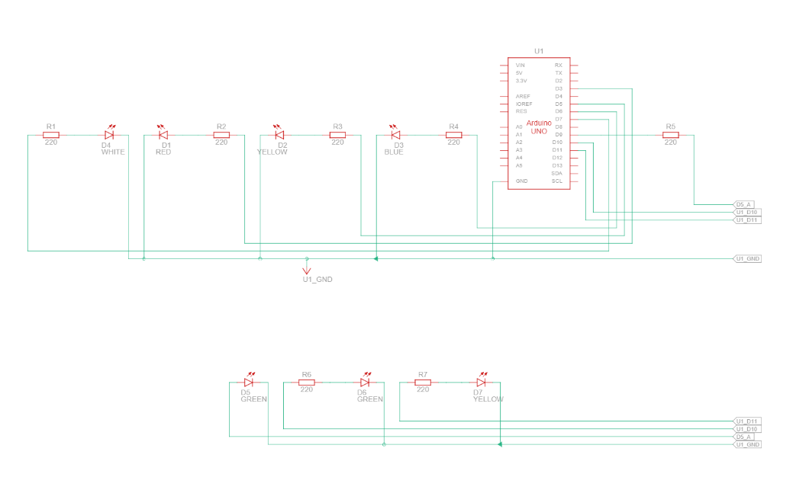

All projects
Queensland grid dispatch simulator
Pulls live Queensland electricity market data and turns the supply/demand balance into ramp-up and ramp-down signals on a physical LED panel.
FocusData and hardware
DataAEMO NEM, QLD1
Year2026
HardwareArduino Uno
The problem
Show how Queensland generators would need to adjust output to keep supply slightly above demand, using real market data instead of an invented scenario.
Worth knowing
- Command-line options: --once, --debug and --port for the serial device.
- Six PWM fuel LEDs: coal, gas, hydro, solar, wind and oil.
- Circuit design for the LED source simulation is included as a PDF.
How it works
- A Python script fetches live spot price, demand and per-unit SCADA output from AEMO dispatch reports.
- 79 registered QLD1 units are mapped to fuel types using the AEMO generator registration list (April 2026).
- Surplus is compared with a 5% target. Positive means ramp down, negative means ramp up.
- Gas, hydro and oil get the full adjustment. Coal and bagasse get a dampened one because they ramp slowly. Wind and solar only report output, as they can't be dispatched on instruction.
- The result goes as JSON over USB serial to an Arduino Uno, which sets PWM brightness on six fuel LEDs and blinks a signal LED on each update.
Images

Files in the repository
| aemo_qld_fetcher.py | Data fetcher and dispatch logic |
| arduino_simulation.ino | Arduino receiver sketch |
| LED_Source_SIM_circuit_design.pdf | Circuit design |
| settings.json | Settings |